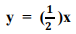
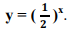

Capítulo 2 – a indústria químico-farmacêutica
FUNÇÕES EXPONENCIAL E LOGARÍTMICA
Contextualizando
Grande parte das funções aplicam-se tanto desenvolvimento e otimização da produção industrial como têm aplicações mais especificas, em algumas indústrias.
A chamada função de progresso é utilizada no controle das necessidades de mão de obra, de espaços, de procedimentos, de engenharia e administração, proporcionando a determinação do custo da introdução de um novo produto ou de modificações a serem efetuadas em produtos já existentes.
Vejamos uma aplicação de funções para a otimização do custo da produção industrial para o planejamento de um novo produto ou de um já existente como é o caso da função de progresso, da forma em que y é o número de homens-hora despendido na produção da x-ésima unidade fabricada sem sofrer solução de continuidade, x é número de unidades produzidas consecutivamente, b é o parâmetro que depende do tipo de atividade considerado, do seu grau de complexidade e de outros fatores e a é o número de homenshoras despendido na produção da primeira unidade.
Conhecidos a e b para cada uma das atividades de produção, poder-se-á levantar as curvas de progresso para cada caso, cujo gráfico é:
Analisando o gráfico, observa-se que se trata de uma função decrescente, pois, quanto maior for o número de unidades produzidas, menor será o custo de homens-hora por unidade.
Que aplicações das funções podemos encontrar no contexto da indústria, em especial da indústria farmacêutica?
Caro aluno,
Ao longo deste capítulo, propomos o estudo dos logaritmos, das funções exponenciais e logarítmicas, retomando as propriedades das potências e a simetria de reflexão.
POTENCIAÇÃO
Seja o produto 2x2x2 em que todos os fatores são iguais, indicamos esse produto por 23 = 8
Essa operação é a potenciação e seus elementos são:
PROPRIEDADES DA POTENCIAÇÃO
Todo número diferente de zero elevado ao expoente zero é igual a 1.
Exemplos:
Todo número elevado ao expoente 1 é igual ao próprio número.
Exemplos:
Todo o número elevado a um expoente inteiro negativo é igual ao inverso do número com expoente positivo.
Exemplos:
Todo o número não negativo com expoente fracionário é igual uma raiz cujo índice é denominador da fração e a base é radicando elevado ao numerador da fração.
Exemplos:
Produto de potências da mesma base, conserva a base e soma os expoentes.
Exemplos:

Potências da mesma base com a base diferente de zero, conserva-se a base subtraem-se os expoentes.
Exemplos:
Potência de potência, conserva-se a base e multiplicam-se os expoentes.
Exemplos:
Potência de um produto: Elevar-se cada fator à potência indicada.
Exemplos:
VAMOS PRATICAR...
1) Qual é a única incorreta das afirmações a seguir:
a) Todo número elevado a zero é igual a 1.
b) Todo número elevado a 1 é igual a ele mesmo.
c) Zero elevado a qualquer número não nulo é igual a zero.
d) Todo número elevado a –1 é igual ao seu inverso.
e) Todo número elevado a ele mesmo é igual ao seu oposto
2) Escreve na forma de potência indicada.
3) Calcular as potências, usando as propriedades:
4) Use as propriedades operatórias e deixe a potência indicada.
5) Calcule o valor das expressões numérica, usando as propriedades:
6) Resolva as equações exponenciais:
FUNÇÕES EXPONENCIAIS
Vamos analisar a situação a seguir e definir a função exponencial.
Dois amigos conversavam sobre assuntos variados, quando um deles jogou uma moeda que trazia na mão para o alto. Nesse momento, o outro falou:
— Deixa ela cair, aposto que vai dar cara.
O dono da moeda retrucou:
— Imagine, como você pode garantir? Há duas possibilidades apenas: cara ou coroa. Não me venha com este ar de 100%, quando você só tem 50% de chances de acertar. Mas, responda: se eu jogar duas moedas para o alto, quantas possibilidades de resposta teremos?
— Deixa eu pensar... teremos 4 possibilidades.
— Jogue agora três moedas.
— Hi, você está complicando! Deixe-me representar:
— Pronto, já sei! São oito as possibilidades.
Podemos até generalizar.
Uma moeda → 21 = 2 possibilidades
Duas moedas → 22 = 4 possibilidades
Três moedas → 23 = 8 possibilidades
x moedas → 2x = y possibilidades
Se tivermos x moedas, teremos 2x possibilidades. E mais ainda, podemos dizer que o número de possibilidades é função da quantidade de moedas.
— É isso aí! Repare que quanto maior é o número de moedas, maior será o número de possibilidades. Como o x consta no expoente, vamos chamar essa função de exponencial.
Definindo a uma função exponencial:
Dado um número real a (a > 0 e a ≠ 1), chama-se função exponencial à função definida por f(x) = y = ax
Na definição, podemos verificar como condição de existência da função exponencial que a base a da potência deve ser positiva (a > 0) e diferente de 1 (a ≠ 1).
REPRESENTAÇÃO GRÁFICA DA FUNÇÃO EXPONENCIAL
Se y = f(x) = 2x com a = 2 com a > 1, o gráfico é:
Se y = f(x) = (1/2)x onde com a = 1/2, e 0 < a < 1, o gráfico é:
Observando os valores a base a e os dois gráficos, podemos concluir que numa função exponencial:
- se a > 1 a função a crescente;
- se 0 < a < 1 a função é decrescente;
- o domínio da função é Df = IR, porque todos os valores de x possuem uma imagem (y) em IR;
- a imagem da função é Imf = IR*, porque a imagem da função (y) é apenas positiva (R*+), porque o gráfico da função se constitui todo acima do eixo x.
VAMOS PRATICAR...
7) Lembrando que a base da função exponencial deve ser positiva, verifique se as funções abaixo atendem às condições de uma função exponencial (justifique a resposta):
a) f(x) = 16x
b) f(x) = (−2)x
c) f(x) = x3
d) f(x) = 0x
8) Dada a função exponencial y = f(x) = 9x, determine:
LOGARITMO
Sendo a e b números reais e positivos, com b ≠ 1, chama-se logaritmo de a na base b, o expoente que se deve elevar a base b de modo que a potência obtida seja igual ao número a. Usando a linguagem matemática, podemos escrever que:
Exemplos:
log2 8 = 3 ⇒ 23 = 8.
Lemos: logaritmo do número 8 na base 2 é 3, pois 2 elevado a 3 é 8.
log4 64 = 3 ⇒ 43 = 64
Lemos: logaritmo do número 64 na base 4 é 3, pois 4 elevado a 3 é 64.
log5 1 = 0 ⇒ 50 = 1
Lemos: logaritmo do número 1 na base 5 é 0, pois 5 elevado a 0 é 1.
log3 3 = 1 ⇒ 31 = 3
CÁLCULO DO LOGARITMO PELA DEFINIÇÃO
Então, para calcular log2 64, usando a definição, vejamos como proceder:
log2 64 = x Lemos: logaritmo do número 64 na base 2 é x,
2x = 64, aplicamos a definição:
(2)x = 26
2x = 26 ⇒ x = 6 ⇒ Então: l logaritmo de 64 na base 2 = 6
Conclusão:
logb a = x (Lê-se logaritmo do número a na base b é igual a x) onde:
a > 0 (a precisa ser positivo)
b > 0 e b ≠ 1 (b precisa ser positivo e diferente de 1)
PARA SABER MAIS
Acesse o vídeo clicando no link a seguir:
VAMOS PRATICAR...
9) Use a definição para calcular os seguintes logaritmos:
FUNÇÕES EXPONENCIAIS E LOGARÍTMICAS
Ao estudar as funções de 1º grau, deparamo-nos com uma reta cuja equação y = x. que se caracteriza-se como a bissetriz que passa pela origem do sistema, o ponto (0,0), atravessa o 1º e o 3º quadrantes, forma com o sentido positivo do eixo das abscissas um ângulo de 45º e é chamada 1ª bissetriz 1
Observando os gráficos 1 e 2 a seguir, em linhas pretas, estão representadas as funções exponenciais . Constatamos que, na lei da função, a variável x está no expoente r e identificamos que a função y = 2x é crescente e a função  é decrescente.
Nos referidos gráficos das funções exponenciais crescentes y = 2x e decrescentes , dobrando os gráficos pela reta bissetriz (y = x), tomando-a como um eixo de simetria e, a partir da linha das funções exponenciais, traçarmos as linhas azuis e ambos os gráficos, observa-se que elas representam uma função crescente em relação a y = 2x e, decrescente, em relação a .
Essas funções, cujos gráficos estão representados nas linhas azuis, são denominadas funções logarítmicas: e são inversas das funções exponenciais
Escrevendo genericamente as funções
Sabendo que 2x = 32 é fácil achar o valor de x, pois 32 é uma potência de 2, logo 2x = 25 então x = 5 e dizemos que 5 é o logaritmo de 32 na base 2.
Achar o logaritmo de 32 na base 2 é encontrar o expoente a que o 2 foi elevado para obter o número 32. Assim, definindo logaritmo de um número positivo b numa base a, a > 0 e a≠1 é o expoente da potência ao qual se deve elevar a base a para obter o número b, observando as seguintes condições de existência do logaritmo:
se b > 0, a > 0 e a ≠ 1 então: logab = x ↔ ax = b.
se a > 0, tanto a função exponencial como a logarítmica são crescentes.
se 0 < a < 1, tanto a função exponencial como a logarítmica são decrescentes.
PRATICANDO... AÇÃO E REFLEXÃO
Se a altura de uma planta dobra a cada mês durante um certo tempo, qual é a altura esperada ao final do 5º mês, sabendo que sua altura inicial medida pelos pesquisadores é de 1cm.
Observa-se que gráfico traçado a partir da tabela representa que o crescimento da planta é exponencial e crescente.
Vejamos, agora, uma aplicação de funções para a otimização do custo da produção industrial para o planejamento de um novo produto ou de um já existente como é o caso da função de progresso, da forma , em que:
y: número de homens-hora despendido na produção da x-ésima unidade fabricada sem sofrer solução de continuidade.
x: número de unidades produzidas consecutivamente.
b: parâmetro que depende do tipo de atividade considerado, do seu grau de complexidade e de outros fatores.
a: número de homens-horas despendido na produção da primeira unidade. Conhecidos a e b para cada uma das atividades de produção, poder-se-á levantar as curvas de progresso para cada caso, cujo gráfico é.
Observe que se trata de uma função decrescente, pois, quanto maior for o número de unidades produzidas menor será o custo de homens-hora por unidade.
O QUE APRENDI
Nesse capítulo, retomamos a potenciação e trabalhamos com a função exponencial, sua inversa, função logarítmica, e suas representações gráficas, observando gráficos e exemplos que nos mostram quando uma função é crescente ou decrescente.
RESPOSTAS DAS QUESTÕES DA SEÇÃO: VAMOS PRATICAR
1) R A única afirmação incorreta é a afirmação (e)
2) Questão 2
3) Questão 3
4) Questão 4
5) Questão 5
6) Questão 6
7) Questão 7
a) Atende às condições pois 16 é positivo.
b) Não atende às condições, pois a base é um número negativo.
c) É função se x for maior que zero e diferente de 1.
d) Não é função, pois a base deve ser diferente de 0.
8) Questão 8
9) Questão 9